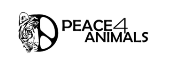
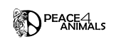

Over 1 million wolves were killed across the United States through government-funded extermination campaigns that mirrored the broader oppression of the wild — and of women and Indigenous peoples. Coexistence, community, and nature have been silenced under systems that value profit over balance.
Women for Wolves was founded to change that. Our mission is to amplify diverse voices in conservation through grants, advocacy, rescue, and partnerships that unite science, storytelling, and spirituality in defense of the wild.
In conservation today, women remain vastly underrepresented — with less than 3% of global environmental leadership roles held by women — while Indigenous perspectives continue to be excluded from wildlife management decisions. Meanwhile, wolves remain persecuted: over 1,400 wolves were legally killed in the U.S. between 2021 and 2024, and up to 90% of captive wolf-dogs are euthanized. Our approach reimagines conservation as collaboration. We empower women, Indigenous groups, and local communities to lead coexistence efforts that protect apex predators and restore the ecosystems we all depend on.
In an industry where women are outnumbered by men 100:1 at the operational level, Women for Wolves places women in authentic leadership roles and builds pathways for the next generation of female conservationists — while safeguarding a future for wild wolves.
Our agenda: to end wolf trapping and hunting nationwide, reform outdated wildlife management systems, and restore wolves to their rightful ecological role as keystone species.
Drag the handle to see how wolf territory has declined since colonization.
Through compassionate sanctuary care and rehabilitation programs that give wolves and wolf-dogs a second chance at life — we restore the human bond with the wild.
Through bold policy action, storytelling, and education, we challenge outdated management systems and protect wolves, wildlife, and wild places.
Through women-led initiatives, Indigenous partnerships, and youth programs, we awaken purpose, leadership, and coexistence for future generations.


 
